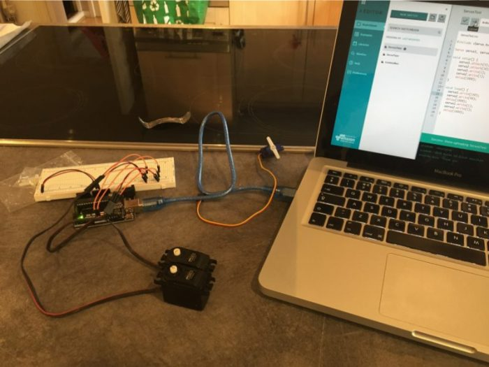

Servos
Getting a servo to move is a bit more complicated that getting an electric motor to spin, but not much so.
Servos are typically limited to being able to rotate 180 degrees, which means it’s not just a simple case of applying a voltage to make it ‘spin’.
Instead the Arduino can send a ‘pulsed’ signal to the servo which governs the position. There are many articles out there describing how to do this, but the Arduino servo library has excellent documentation and clear steps on the basics.
Thankfully the basics is all I need.
Here’s a video showing my progress after an hour or so of work in the Arduino IDE. Both servos are powered directly from the Arduino board – I was a bit worried about whether the current draw on the board would be too much, but experimentation showed no problems so I went with it.
One servo will be used to lift the ‘lid’ of the box, and the other will be attached to the ‘finger’. For now, just getting the two servos moving independently is enough for me…
…and a better view of my ‘setup’…

TIP
I found that when the servos were at their maximum/minimum values they would make a ‘whine’ sound, which I could only remove by limiting the extent the Arduino code allowed them to move. So instead of 0-180 degrees, 1-179 actually worked better for me.